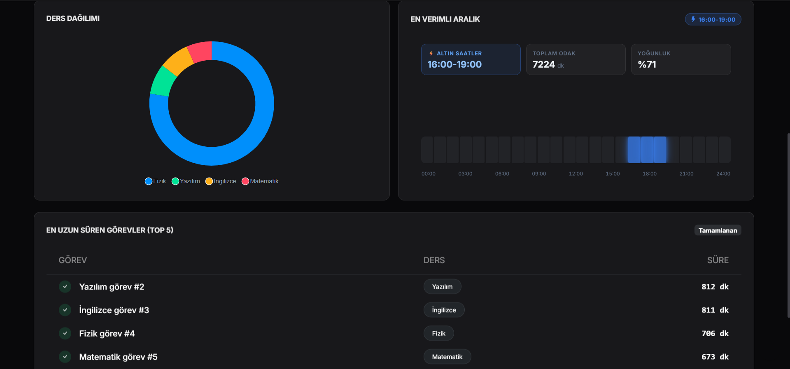
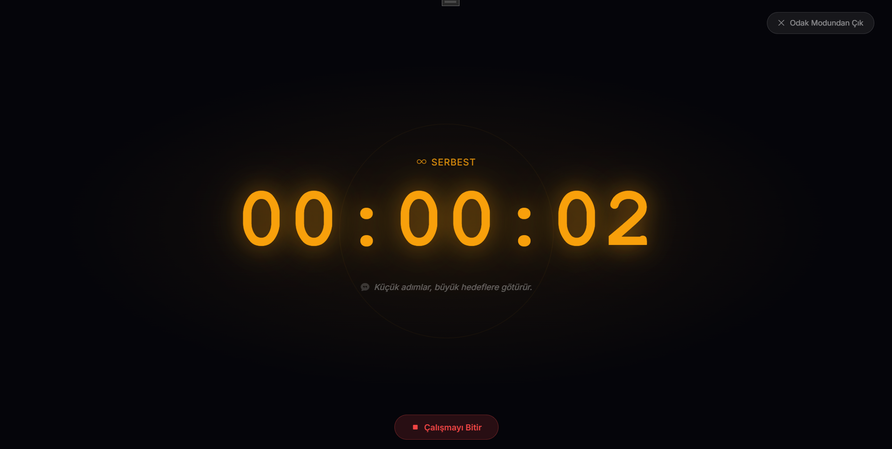
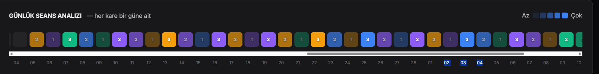
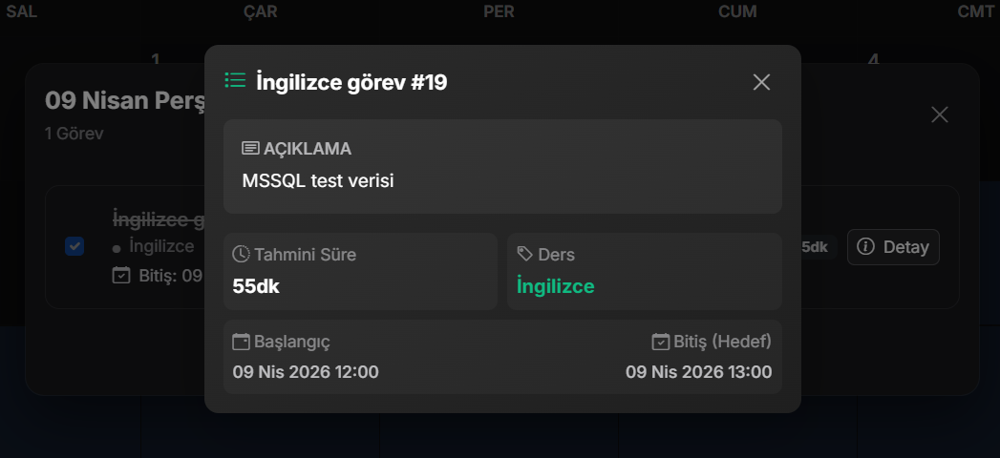
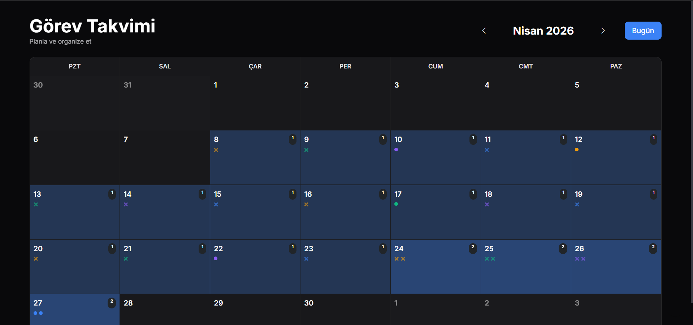

StudyTime
Çevrimdışı Öncelikli Akıllı Odaklanma Asistanı
Problem & Çözüm
⚠️ Problem
Dijital dikkat dağınıklığı, odaklanma sorunları ve internet kesintilerinde yaşanan veri kaybı. Mevcut asistanların sürekli ağ bağlantısı gerektirmesi verimliliği düşürmektedir.
💡 Çözüm
StudyTime'ın kesintisiz ve bağlama duyarlı (Context-aware) yaklaşımı. Ağ olmasa bile çalışan asenkron mimarisi ile kişiselleştirilmiş, akıllı bir odaklanma ekosistemi.
Teknik Mimari & Altyapı
.NET MAUI Blazor Hybrid
Tek bir kod tabanıyla Masaüstü ve Mobil (Cross-platform) ortamlarında çalışan, modern ve yüksek performanslı hibrit uygulama mimarisi.
- Clean Architecture ve SOLID prensiplerine tam uyum.
- Ortak İş Mantığı (Domain/Application) ile %90+ kod paylaşımı.
Offline-First & Outbox Pattern
SQLite ile yerel veritabanı yönetimi ve internet bağlantısı sağlandığında sunucuya veri aktarımını asenkron olarak yürüten Background Sync (Outbox) altyapısı.
- Ağ kesintilerinde mutasyonların (Event Sourcing benzeri) yerel SQLite kuyruğunda saklanması.
- Ağ geri geldiğinde BackgroundService ile çakışmasız (Conflict-Free) bulut senkronizasyonu.
Gözlemlenebilirlik
Sistem hareketlerini ve asenkron görevleri anlık takip edebilmek için Serilog ile entegre edilmiş yapılandırılmış loglama.
- Dağıtık mimaride izlenebilirlik için yapılandırılmış JSON logları.
- Hata toleransı (Fault Tolerance) ve otomatik yeniden deneme (Retry) politikaları.
Dağıtık Kimlik & Güvenlik
Platforma duyarlı (Platform-Aware) JWT tabanlı kimlik doğrulama ve cihazlar arası güvenli durum (State) yönetimi.
- Sürekli çalışma için güvenli Token Rotation (Refresh Token) döngüsü.
- Veri bütünlüğünü sağlamak için Single Active Session (Tekil Aktif Oturum) kısıtlaması.
✨ 'Altın Saatler' Algoritması
Kullanıcının çalışma alışkanlıklarını, odaklanma sürelerini ve görev geçmişini analiz ederek en verimli saatlerini (Golden Hours) tespit eden ve bağlama duyarlı bildirimlerle verimliliği artıran akıllı asistan yeteneği.
🧠 Algoritmik Altyapı:
Performans odaklı "Sliding Window" (Kayan Pencere) algoritması kullanılarak, ağır veritabanı aggregasyonları yerine son 7 günün çalışma verisi üzerinden ağırlıklı hareketli ortalama (Weighted Moving Average) hesaplanır. Sistem, kullanıcı davranışlarına bağlama duyarlı (Context-Aware) reaksiyon gösterir.
Çözüm Algoritmaları ve Arayüz (Ayrıntılı Analiz)

📊 Ana Dashboard ve Verimlilik Skoru
Kullanıcının toplam, tamamlanan ve bekleyen görevlerini özetleyen kontrol merkezi.
🎯 Neyi Çözüyoruz?
Kullanıcı, eforunun genel gidişatını tek bakışta göremediğinde motivasyon kaybı yaşar.
⚙️ Algoritma
İstatistikler "Event Sourcing" benzeri bir mimariyle toplanır ve UI bloklanmadan anlık (Real-time) olarak güncellenir.

✨ En Verimli Aralık (Altın Saatler)
Kişisel verimlilik zirvelerinin (Peak Hours) tespit edildiği analiz modülü.
🎯 Neyi Çözüyoruz?
Klasik sistemler kullanıcının "ne zaman" daha iyi çalıştığını analiz edemez ve geri bildirim sunmaz.
⚙️ Algoritma
"Sliding Window" ve In-Memory hareketli ortalama algoritmasıyla son 7 gün analiz edilerek günün en verimli saatleri tespit edilir.

📅 Çalışma Geçmişi ve Lineer Analiz
Geçmiş oturumların zamansal dağılımını gösteren detaylı performans ekranı.
🎯 Neyi Çözüyoruz?
Kullanıcı, dünkü eforu ile bugünkü eforunu karşılaştırmak için şeffaf bir veriye ihtiyaç duyar.
⚙️ Algoritma
Veriler SQLite üzerinden indekslenmiş sorgularla saniyeler içinde çekilip (Zero Latency), Blazor interop ile grafik kütüphanesine render edilir.

⏱️ Odak Modu (Pomodoro/Serbest)
Dış dünyadan izole, zamanlayıcının ve bağlam duyarlı bildirimlerin aktif olduğu ana alan.
🎯 Neyi Çözüyoruz?
Çalışma anında dikkat dağınıklığı ve internet koptuğunda veri kaybı riskini ortadan kaldırıyoruz.
⚙️ Algoritma
Offline-First çalışır. Sayaç bittiğinde olay SQLite'a yazılır, ağ geldiğinde Outbox Pattern ile asenkron olarak arka planda senkronize olur.

🗂️ Oturum (Seans) Yönetimi
Kaydedilen odaklanma seanslarının yönetildiği veri tablosu.
🎯 Neyi Çözüyoruz?
Hangi seansın ne kadar başarılı geçtiğini veya manuel düzeltme gerektirdiğini ölçümlemek zordur.
⚙️ Algoritma
Her seans "StudySession" entity'si olarak kaydedilir, oturumlar arası durum (State) güvenliği platforma duyarlı JWT ile sağlanır.

📚 Kategori ve Ders Yönetimi
Çalışma alanlarının kategorize edildiği, yapılandırılmış ders merkezi.
🎯 Neyi Çözüyoruz?
Karmaşık çalışma planları organize edilmezse (Ders -> Konu -> Görev) ciddi zaman kaybı yaratır.
⚙️ Algoritma
Entity Framework Core ilişkisel veritabanı (Relational DB) mantığı ile Kategoriler ve Görevler birbirine tam referanslı bağlanır (Foreign Key).

📝 Görev Takibi ve Analizi
Belirli bir göreve harcanan zamanın ve ilerleme oranının detaylı takibi.
🎯 Neyi Çözüyoruz?
Büyük hedefler (Epics) alt parçalara (Tasks) ve oturumlara bölünmediğinde ulaşılamaz görünür.
⚙️ Algoritma
Görev tamamlanma oranları hiyerarşik (Tree/Graph) bir yapıda hesaplanıp parent (üst) entity'ye doğru toplanır (Aggregation).

🗓️ Zaman ve Görev Planlaması
Gelecek hedeflerin ve teslim tarihlerinin (Deadline) takvimsel görünümü.
🎯 Neyi Çözüyoruz?
Teslim tarihi yönetimi yapılmadığında süreçler gecikir, stres ve erteleme (Procrastination) tetiklenir.
⚙️ Algoritma
Background Service (Arka plan servisi) ile yaklaşan görevler periyodik taranır ve işletim sistemi native bildirim motoru tetiklenir.
Proje Ekibi
Doğu Akdeniz Üniversitesi (DAÜ) GBYF Yarışma Projesi
Geliştiriciler
Emrah Topçu
Danışman
Prof. Dr. Akile Oday